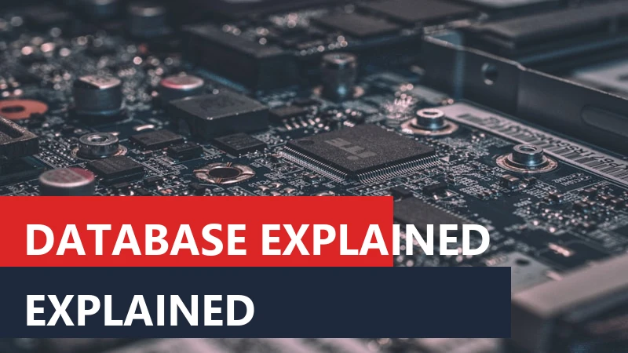

What is a Database? SQL vs NoSQL Explained in Simple Terms

1. A World Powered by Data
Every single application you use on your smartphone or computer is, essentially, just a beautiful visual interface sitting on top of a massive pile of data. When you scroll through Instagram, you are requesting image data. When you check your bank balance, you are querying financial data. When you book a flight, you are locking in seating data.
In our modern digital economy, data is often compared to oil. It is the most valuable resource on the planet. However, raw data is completely useless if you cannot store it securely, find it instantly, and update it without errors. If a bank accidentally loses your transaction history, or if an airline accidentally books two people in the same seat, the entire system collapses.
This brings us to one of the most critical and highly paid fields in computer science: Database Architecture. In this comprehensive guide, we will strip away the confusing jargon and explain exactly how computers store billions of pieces of information, the fundamental difference between the two reigning heavyweights (SQL and NoSQL), and how engineers design these systems to serve millions of users simultaneously.
2. What Exactly is a Database? (And Why Excel Doesn't Count)
A Database is an organized collection of structured information, or data, typically stored electronically in a computer system. The key word here is organized.
Many beginners ask a very logical question: "Why do programmers use complex databases when they could just save everything in a massive Microsoft Excel spreadsheet?"
While an Excel spreadsheet is technically a collection of data, it completely fails at scale due to three massive limitations:
- Concurrency: If you and a coworker try to edit the same exact cell in an Excel file at the same time, the file will crash or overwrite one person's work. A true database is designed for concurrency, allowing thousands of people to read and edit different parts of the data at the exact same millisecond without colliding.
- Data Integrity: In Excel, someone can accidentally type the word "Hello" into a column meant for Phone Numbers. A database enforces strict rules, instantly rejecting any data that does not fit the required format, ensuring the data remains pure and mathematically usable.
- Speed and Scale: Excel starts to freeze and stutter if you add a million rows of data. A true database can instantly search through a billion rows of data and return an exact match in less than five milliseconds.
3. The Role of the DBMS (Database Management System)
A database itself is just raw data sitting on a hard drive. To interact with it, you need a software middleman. This software is called the Database Management System (DBMS).
The DBMS acts as the gatekeeper. When a backend web application wants to retrieve a user's password to log them in, the app does not directly touch the hard drive. Instead, it sends a request to the DBMS. The DBMS verifies that the app has security permission, finds the exact location of the password on the hard drive, retrieves it, and hands it back to the app.
Famous examples of DBMS software include MySQL, PostgreSQL, Oracle Database, and Microsoft SQL Server. These massive software engines are optimized to run on powerful servers, handling millions of requests per minute.
4. Relational Databases (SQL): The Organized Filing Cabinet
For over forty years, the undisputed king of data storage has been the Relational Database. In a relational database, data is stored in highly structured Tables consisting of Rows and Columns. It looks very much like a spreadsheet, but with incredibly strict rules.
Before you can put data into a relational database, you must define the Schema. A schema is the absolute, unbreakable blueprint of the table. For example, if you create a "Users" table, you might define the schema as:
- Column 1: User_ID (Must be a Number)
- Column 2: First_Name (Must be Text, max 50 characters)
- Column 3: Email (Must be Text, must contain an '@' symbol)
If a program tries to insert a new user but forgets to include an email, or provides an email without an '@' symbol, the database will instantly reject the entire entry. This strictness is the greatest strength of a relational database. It guarantees that your data is perfectly clean, predictable, and reliable. This makes relational databases the mandatory choice for financial systems, banking, and inventory management.
5. The Magic of Primary and Foreign Keys
The true power of a Relational Database is the word "Relational." It means you can connect different tables together using mathematical links, avoiding the need to duplicate data.
Imagine you run an online store. You have a table for Customers and a table for Orders. If John Doe buys a laptop, you do not want to type John's full name, address, and phone number into the Orders table. If John changes his address later, you would have to update it in a hundred different past orders.
Instead, we use Keys:
- Primary Key: Every table has one column that acts as a unique identifier for that specific row. In the Customers table, John is given a unique
Customer_ID = 105. No other customer can ever have the number 105. This is the Primary Key. - Foreign Key: In the Orders table, instead of writing John's name, you simply have a column called
Customer_IDand you put the number105in it. This acts as a bridge (a Foreign Key) pointing back to the Customers table.
When the application needs to display John's order, it tells the database to "JOIN" the two tables together using that number. If John changes his address, you only update it once in the Customers table, and every order instantly points to the new address.
6. What is SQL? (The Language of Data)
To talk to a Relational Database, you must speak its specific language. That language is SQL (Structured Query Language), pronounced either as "S-Q-L" or "Sequel."
SQL is not a programming language like Python or Java. It is a declarative query language. You do not tell the database how to find the data; you simply tell it what you want, and the DBMS figures out the fastest way to get it.
A standard SQL command looks almost like plain English. For example, to find all customers who live in New York, a programmer would write:
SELECT First_Name, Last_Name FROM Customers WHERE City = 'New York';
SQL is incredibly powerful. With a single line of code, you can ask the database to sum up the total revenue of all orders placed by users in New York over the last three months, and it will return the mathematical answer in milliseconds.
7. Non-Relational Databases (NoSQL): The Flexible Warehouse
For decades, relational SQL databases were the only logical choice. However, in the mid-2000s, the internet exploded. Companies like Facebook, Twitter, and Amazon were suddenly dealing with "Big Data"—massive, unpredictable, unstructured floods of information.
The strict, rigid schema of a Relational Database became a bottleneck. If you have a table with a billion users, and you decide you want to add a new column for "Instagram Handle," the SQL database has to pause and modify a billion rows to add an empty box. This was too slow and inflexible for modern agile development.
This led to the invention of NoSQL (Not Only SQL) databases.
A NoSQL database throws away the concept of strict Tables, Rows, and Columns. It throws away the rigid Schema. Instead of an organized filing cabinet, it is like a massive, flexible warehouse where you can throw data in almost any format you want.
8. Types of NoSQL Systems
Because NoSQL simply means "not a traditional table," there are several wildly different types of NoSQL databases, each designed to solve a specific problem.
- Document Databases (e.g., MongoDB): The most popular type. Instead of rows, data is stored in flexible JSON (JavaScript Object Notation) documents. User A's document might have an email and a phone number, while User B's document might have an email, three social media links, and a list of favorite movies. The database doesn't care; it accepts both without requiring a rigid structure.
- Key-Value Stores (e.g., Redis): The simplest and fastest databases on earth. They store data like a dictionary. You provide a unique Key (like "Session_ID_55"), and it returns the Value attached to it. They are entirely held in the computer's RAM, making them lightning fast, often used for caching data so it loads instantly on a website.
- Graph Databases (e.g., Neo4j): Instead of storing documents, these store "Nodes" and the "Relationships" between them. They are heavily used by social networks. If you want to find "Friends of Friends who also like the movie The Matrix," a graph database can calculate that connection instantly, whereas a traditional SQL database would struggle mathematically.
9. SQL vs. NoSQL: How to Choose
Neither system is objectively "better" than the other. Choosing between SQL and NoSQL is the most critical decision a software architect will make, based entirely on the shape of the data.
You should choose SQL when: Your data is highly structured, predictable, and requires extreme mathematical accuracy. If you are building an accounting system, a banking app, or an airline reservation system, you must use SQL. You need the database to strictly enforce rules and guarantee that an account balance cannot be corrupted.
You should choose NoSQL when: Your data is unstructured, unpredictable, or changing rapidly. If you are building a social media feed, an Internet of Things (IoT) sensor dashboard, or a rapid prototype where you are constantly adding new features, NoSQL gives developers the freedom to change the data structure on the fly without breaking the system.
10. The Ultimate Battle: Vertical vs. Horizontal Scaling
The biggest architectural difference between SQL and NoSQL is how they handle growth, a concept known as "Scaling."
SQL Relational Databases require Vertical Scaling (Scaling Up). Because SQL relies on complex JOIN operations between tables, the entire database generally needs to live on a single physical server. If your app goes viral and the database slows down, the only way to fix it is to buy a bigger, more expensive server with more CPU and RAM. Eventually, you will hit a physical ceiling; there is only so much RAM you can put in a single machine.
NoSQL Databases allow Horizontal Scaling (Scaling Out). Because NoSQL documents do not rely on complex mathematical links (JOINs), you can easily split the database across hundreds of different physical servers. If your app goes viral, you don't buy a $100,000 super-server. You just rent ten cheap $1,000 servers and distribute the data across them. This makes NoSQL infinitely scalable, which is why massive tech giants rely on it.
11. The Gold Standard: ACID Properties
When discussing Relational (SQL) databases, specifically in the context of banking or financial applications, you will often hear engineers refer to the "ACID properties." ACID is an acronym that defines the strict mathematical guarantees a database must provide to ensure data is never corrupted during a transaction.
- Atomicity: The "all or nothing" rule. If you transfer $100 from your checking to your savings account, the database must deduct the money from checking AND add it to savings in a single, indivisible operation. If the power goes out exactly halfway through, the database must automatically cancel (rollback) the entire transaction. You cannot have the money leave one account and never arrive in the other.
- Consistency: The database must move from one valid state to another. It strictly enforces the schema rules. If a column is programmed to only accept positive numbers, any transaction trying to force a negative number will be instantly rejected.
- Isolation: If two people try to buy the absolute last ticket to a concert at the exact same millisecond, the database isolates those transactions, forcing them to happen sequentially in the background. It guarantees that they do not interfere with each other, ensuring the ticket is only sold once.
- Durability: Once the database tells the application "Transaction Successful," that data is permanently written to the physical hard drive. Even if the server explodes a millisecond later, the record of that transaction survives and will be there when the backup server turns on.
12. The CAP Theorem in Distributed Databases
While SQL databases pride themselves on ACID compliance, NoSQL distributed databases operate under a different set of physical laws, famously described by the CAP Theorem. The CAP theorem states that in a distributed database system (where data is spread across multiple physical servers), you can only guarantee two out of the following three traits at any given time:
- Consistency: Every server in the cluster has the exact same data at the exact same time. If you update your profile picture on Server A, Server B instantly knows about it.
- Availability: The system is always online. Even if three servers crash, the remaining servers will still answer the user's request without throwing an error.
- Partition Tolerance: The system continues to operate even if the network connection between the servers breaks completely.
Because network failures (Partition Tolerance) are a physical reality of the internet, massive NoSQL databases are forced to choose between Consistency and Availability. For example, a banking database will choose Consistency (it will refuse to show your balance if the servers are out of sync). However, a social media feed will choose Availability; it doesn't matter if your friend sees your new post five seconds later than you do, as long as the app doesn't crash (this is called "Eventual Consistency").
13. The Future of Databases in the Cloud
Historically, companies had to buy physical servers and hire specialized Database Administrators (DBAs) to install, backup, and maintain their databases. This was a massive financial barrier to entry for startups.
Today, the industry has shifted to DBaaS (Database as a Service). Cloud providers like Amazon Web Services (AWS), Google Cloud, and Microsoft Azure offer fully managed databases. A developer can click a button, and within two minutes, they have a globally distributed, automatically backed-up, highly secure database running in a data center halfway across the world, paying only for the exact milliseconds of processing power they use.
Furthermore, we are seeing the rise of NewSQL databases—cutting-edge systems (like Google Spanner) that attempt to offer the strict data integrity and SQL query language of a traditional relational database, combined with the infinite horizontal scaling capabilities of a NoSQL system.
14. Conclusion: The Foundation of Software
Understanding databases is the key to understanding modern software. A beautifully designed frontend interface is useless if the backend cannot retrieve data accurately and swiftly. The choice between the strict, reliable ledgers of a SQL relational database and the flexible, infinitely scalable documents of a NoSQL system defines the architecture of the entire application.
As data continues to grow exponentially—fueled by artificial intelligence, mobile apps, and interconnected devices—the ability to structure, query, and protect that data will remain one of the most critical skills in the technology sector. The next time you effortlessly search through a million products on an e-commerce site, take a moment to appreciate the incredible database architecture working tirelessly beneath the surface.

Founder of TyagiHub. Dedicated to demystifying the most complex topics in computer science and software engineering for the next generation of technologists.
Read full author profile →